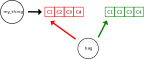
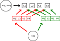

Unique-pointeur
Les primitives new et delete ne devraient être réservées qu’à des cas exceptionels.
C’est bien mieux d’utiliser des unique pointeurs (c’es-à-dire d’utiliser le type std::unique_ptr)
qui sont la bonne façon en C++ de représenter des pointeurs ownants.
Premier std::unique_ptr
Pour créer un objet sur le tas, nous allons nous servir d’un petit utilitaire appelé std::unique_ptr et de la fonction std::make_unique.
Ces deux symboles se trouvent dans le header <memory>.
Voici la syntaxe permettant d’allouer de la mémoire pour un entier :
void fcn()
{
std::unique_ptr<int> int_on_heap = std::make_unique<int>(3);
std::cout << *int_on_heap << std::endl; // affiche 3
*int_on_heap = 5;
std::cout << *int_on_heap << std::endl; // affiche 5
// Remarque: aucune instruction de désallocation !
}- La classe
unique_ptrest un symbole que l’on template par le type qu’il doit contenir.\ - La fonction
make_uniqueprend les valeur avec laquelle on souhaite construire l’objet pointé.\ - On accède ensuite au contenu avec l’opérateur
*, un peu comme pour un pointeur classique.
La magie ici, c’est qu’une fois que l’on sort de la fonction, le destructeur de la classe unique_ptr s’occupe tout seul de désallouer la mémoire.
Vous n’avez donc pas à vous soucier de faire des free ou des delete, tout est libéré automatiquement.
Allocation d’un objet
Voyons maintenant comment cela se passe avec une classe.
#include <iostream>
#include <memory>
class Dog
{
friend std::ostream& operator<<(std::ostream& stream, const Dog& dog)
{
return stream << "I have a " << dog._breed
<< " named " << dog._name << "." << std::endl;
}
public:
Dog(const std::string& name, const std::string& breed)
: _name { name }
, _breed { breed }
{}
void rename(const std::string& new_name) { _name = new_name;}
bool operator==(const Dog& other) const
{ return _name == other._name && _breed == other._breed; }
private:
std::string _name;
std::string _breed;
};
int main()
{
std::unique_ptr<Dog> dog = std::make_unique<Dog>("Lassie", "Colley");
std::cout << *dog << std::endl;
dog->rename("Doggie");
std::cout << *dog << std::endl;
return 0;
}C’est quasiment pareil que pour la primitive, la subtilité étant que l’on peut directement passer au make_unique les paramètres que l’on passerait au constructeur de la classe.
On peut donc écrire directement std::make_unique<Dog>("Lassie", "Colley") à la place de std::make_unique<Dog>(Dog { "Lassie", "Colley" }).
En ce qui concerne l’accès aux fonctions-membres et aux attributs, cela se fait avec l’opérateur ->.
Manipulation
Nous allons maintenant voir ce que l’on peut faire avec un unique_ptr.
Initialisation
std::unique_ptr<Dog> dog = std::make_unique<Dog>("Lassie", "Colley");Réassignation
std::unique_ptr<Dog> dog = std::make_unique<Dog>("Lassie", "Colley");
dog = std::make_unique<Dog>("Snoopy", "Beagle");Suppression
std::unique_ptr<Dog> dog = std::make_unique<Dog>("Lassie", "Colley");
dog.reset();Accès
std::unique_ptr<Dog> dog = std::make_unique<Dog>("Snoopy", "Beagle");
dog->rename("Chnoupy");
std::cout << *dog << std::endl;Test
std::unique_ptr<Dog> dog;
if (dog)
{
std::cout << *dog << std::endl;
}
else
{
std::cout << "No dogs yet!" << std::endl;
}Comparaison
std::unique_ptr<Dog> dog1 = std::make_unique<Dog>("Lassie", "Colley");
std::unique_ptr<Dog> dog2 = std::make_unique<Dog>("Lassie", "Colley");
if (dog1 != nullptr)
{
if (dog1 != dog2)
{
if (*dog1 == *dog2)
{
std::cout << "We have two different dogs, but they have the same names and breed." << std::endl;
}
}
}En C++, le pointeur null se nomme nullptr. Ce n’est donc pas comme en C, où on utilise NULL.
Copie
La classe unique_ptr ne se nomme pas unique_ptr pas hasard.
Il est en effet interdit de faire des copies de unique_ptr.
Le compilateur vous empêchera par exemple de compiler le code suivant :
std::unique_ptr<Dog> dog = std::make_unique<Dog>("Lassie", "Colley");
std::unique_ptr<Dog> dog_copy = dog; // Ouch!
Quel est l’intérêt d’empêcher la copie d’un unique_ptr ?
Cela permet de clarifier l’ownership de l’objet alloué en interne.
En effet, si le code précédent était valide, qui selon vous de dog ou de dog_copy serait le propriétaire de Lassie (c’est-à-dire l’objet alloué en mémoire) ?
A la destruction de dog, est-ce qu’il faudrait détruire Lassie et libérer la mémoire ? Que se passe-t-il du coup si dog_copy n’est pas encore détruit et que l’on appelle rename dessus ?
Toutes ses questions font qu’on risquerait de se retrouver avec des références sur des objets non valides.
Pour simplifier, le unique_ptr ne gère que de l’ownership unique et à sa destruction, il supprime bien l’objet alloué de la mémoire afin de garantir l’absence de fuite mémoires.
Ok, mais si en fait, ce que je voulais, c’était une copie du premier objet, qui aurait sa propre durée de vie ?
Dans ce cas, vous pouvez réutiliser make_unique, en faisant appel au constructeur de copie de l’objet :
std::unique_ptr<Dog> dog = std::make_unique<Dog>("Lassie", "Colley");
std::unique_ptr<Dog> dog_copy = std::make_unique<Dog>(*dog);Notez bien qu’ici, les deux pointeurs pointent sur deux objets différents en mémoire.
Si on appelle rename sur dog_copy, le nom de dog ne sera pas modifié.
std::unique_ptr<Dog> dog = std::make_unique<Dog>("Lassie", "Colley");
std::unique_ptr<Dog> dog_copy = std::make_unique<Dog>(*dog);
dog_copy->rename("Chouchou");
std::cout << *dog << std::endl; // -> Lassie
std::cout << *dog_copy << std::endl; // -> Chouchou
Le fait qu’on ne puisse pas copier un unique_ptr a des conséquences qu’on ne voit pas forcément au début.
Par exemple, ça fait qu’on ne peut pas non plus copier un conteneur de unique_ptr (par exemple un std::vector<std::unique_ptr<..>>).
C’est pareil pour une classe qui a un unique_ptr comme attribut:
class MyClass {
public:
// MyClass(const MyClass&) = default; // Ne fonctionnera pas
// On doit redéfinir le constructeur de copie à la main
MyClass(const MyClass& other)
: _dog{std::make_unique<Dog>(other._dog)}
{}
private:
std::unique_ptr<Dog> _dog;
}Un peu de pratique
Pour vous habituez à manipuler les unique_ptr, vous allez modifier le code du programme c3-3-cat.
Commencez par allouer dynamiquement un objet de type Cat et affichez son contenu à l’aide de l’opérateur << déjà défini.
Redéfinissez le destructeur de Cat pour afficher du texte et vérifier que l’objet pointé est bien détruit à la sortie du scope, lorsque le unique_ptr est détruit.
Ajoutez un constructeur à 1 paramètre à la classe Cat pour initialiser son attribut _name.
Adaptez l’initialisation du unique_ptr afin que le programme puisse compiler.
Créez maintenant un unique_ptr<Cat> vide et vérifiez que celui-ci est bien égal à nullptr.
Réassignez ce dernier à une nouvelle instance de Cat allouée dynamiquement.
Affichez si les deux unique_ptr sont égaux, puis si les deux objets pointés sont égaux.
Réinitialisez le premier unique_ptr afin que celui-ci détruise l’objet sur lequel il pointe.
Vérifiez que celui-ci est maintenant bien égal à nullptr.
Réallocation de vector
Revenons à notre problème de réallocations intempestives.
Voici le code du programme c3-3-bag :
#include <iostream>
#include <string>
#include <vector>
struct Content
{
Content(std::string name)
: name { name }
{}
std::string name;
};
class Bag
{
public:
Content& add(const std::string& name)
{
return _contents.emplace_back(name);
}
private:
std::vector<Content> _contents;
};
int main()
{
Bag bag;
Content& my_thing = bag.add("my_thing");
for (size_t i = 0; i < 200; ++i)
{
bag.add("another_thing");
}
std::cout << my_thing.name << std::endl; // my_thing ?
my_thing.name = "still_my_thing";
std::cout << my_thing.name << std::endl; // still_my_thing ?
return 0;
}Ce que l’on voudrait ici, c’est pouvoir garantir que my_thing reste valide jusqu’à la fin du programme, malgré les réallocations pouvant avoir lieu dans la boucle à l’intérieur du main.
En utilisant des unique_ptr à l’intérieur de Bag::_contents, on peut résoudre le problème.
Testez le code suivant et vérifiez qu’il fonctionne correctement :
#include <iostream>
#include <memory>
#include <string>
#include <vector>
struct Content
{
Content(const std::string& name)
: name { name }
{}
std::string name;
};
class Bag
{
public:
Content& add(const std::string& name)
{
std::unique_ptr<Content>& content = _contents.emplace_back(std::make_unique<Content>(name));
return *content;
}
private:
std::vector<std::unique_ptr<Content>> _contents;
};
int main()
{
Bag bag;
Content& my_thing = bag.add("my_thing");
for (size_t i = 0; i < 200; ++i)
{
bag.add("another_thing");
}
std::cout << my_thing.name << std::endl;
my_thing.name = "still_my_thing";
std::cout << my_thing.name << std::endl;
return 0;
}Le programme fonctionne comme attendu car nous avons introduit un niveau intermédiaire entre la mémoire du vector à la mémoire des objets de type Content.
Avant, pendant la réallocation, chacun des objets Content était déplacé vers une nouvelle zone de la mémoire, d’où l’invalidation des références.

Désormais, ce sont les unique_ptr qui sont déplacés ailleurs.
Les éléments de type Content restent à leur place.
La référence my_thing qui pointe sur l’un d’entre eux reste donc valide aussi longtemps que bag l’est aussi.

Passer un unique_ptr
Ce n’est pas visible dans les exemples ci-dessus, mais il reste un problème dont on a pas encore parlé: comme faire pour passer un unique_ptr à une fonction, constructeur ou autre?
Par exemple, considérons le bout de code en dessous.
int my_func(std::unique_ptr<Dog>> p) { /* ... */ }
int main() {
std::unique_ptr<Dog> my_ptr = std::make_unique<Dog>("Lassie", "Colley");
// On veut appeler my_func !
// my_func(my_ptr); // Ne va pas compiler car cela provoque
// une copie de my_ptr -> interdit
}Pour construire p, on ne pourra pas utiliser le constructeur de copie de std::unique_ptr<Dog> car il n’existe pas, il faut donc passer à my_func une R-value !!
- Soit on utilise
std::movesi jamais on n’a plus besoin demy_ptr.
int main() {
std::unique_ptr<Dog> my_ptr = std::make_unique<Dog>("Lassie", "Colley");
my_func( std::move(my_ptr) );
// ^^^^^^^^^^^^^^^^^
// R-value
// Après l'appel à f, my_ptr est nul
}- Soit on a encore besoin de notre
my_ptr, et on fait une R-value du bon-type àfen copiantmy_ptr.
int main() {
std::unique_ptr<Dog> my_ptr = std::make_unique<Dog>("Lassie", "Colley");
my_func( std::make_unique<Dog>(*my_ptr) );
// ^^^^^^^^^^^^^^^^^^^^^^^^^^^^^^
// R-value
}Notez que dans les deux cas, on est parfaitement aligné avec l’ownership visible dans le programme.
Puisque f déclare un argument de type std::unique_ptr<Dog>>, ça signifie qu’il veut own le Dog pointé par p.
De l’autre côté, c’est main qui own le Dog pointé par my_ptr. Donc soit main cède l’ownership à f (premier cas) soit il en fait une copie pour f (deuxième cas).